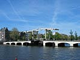

Tourist Information Amsterdam
Amsterdam, the Netherlands' capital, is one of the world's best hangout
spots, a place where you can immerse yourself in culture, history, art,
in the head of a beer or a self-rolled smoke.
Amsterdam is situated 20 km from the sea, at the point where river
Amstel joins the river IJ. The city has a population of about 750,000
and is the country's second largest port - after Rotterdam. Amsterdam is
at the centre of a part of the Netherlands where there are many places
of interest within easy reach.
Amsterdam Museums
For a fairly small city, Amsterdam has a surprisingly large number of
museums and galleries.Traditional art-lovers know the route to the
Rijksmuseum and the Van Gogh Museum. But modern art too is richly
represented in Amsterdam, with the Stedelijk Museum and the Cobra museum
in Amstelveen to name just two. There is a plenty of galleries,
especially in the Spiegelkwartier and in the Jordaan. And if you want to
experience more of nature, then the gardens of the universities and
Artis Zoo are the right addresses. In a nutshell, there are lot of
things to see in Amsterdam.

Museums
Amsterdam Canals and Waterways
From the grace and elegance, the city's canals and waterways embody the
very spirit of Amsterdam. They are spanned by many beautiful bridges,
including the famous Magere Brug, a traditionally stylled lift bridge.
You can simply relax at a canalside café and watch an array of boats
float by, or take a canal tour.

Bridges